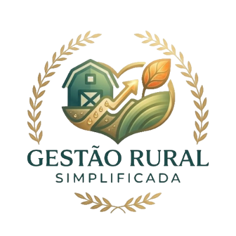

Organize sua produção, gastos e vendas de forma fácil pelo celular
O Controle Rural Simples foi criado para ajudar produtores rurais a organizar a produção, controlar gastos e acompanhar o lucro sem complicação. Funciona direto no celular ou computador.
Registro de plantio e previsão de colheita.
Controle de despesas com insumos e produção.
Quantidade produzida por safra ou período.
Controle de manutenção de equipamentos.
Cadastro e acompanhamento do rebanho.
Veja se a produção está dando lucro.
Entre em contato e conheça o sistema.
Falar no WhatsApp